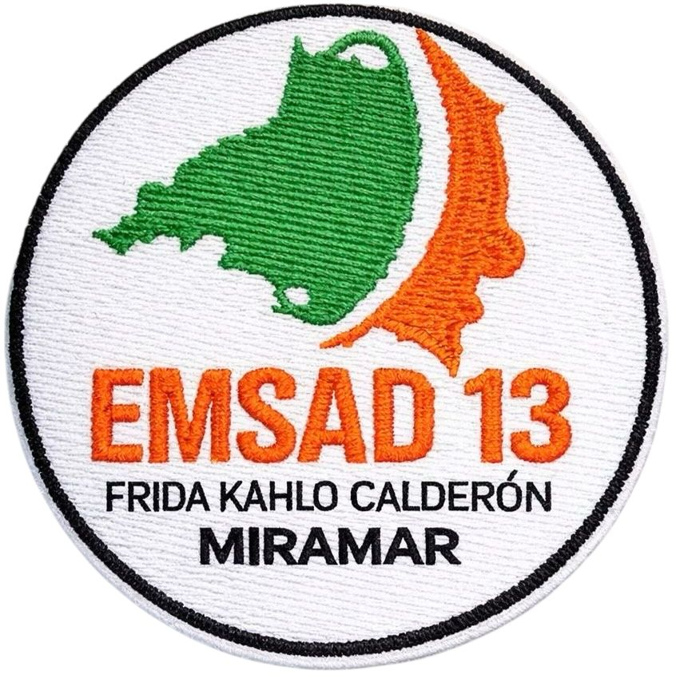
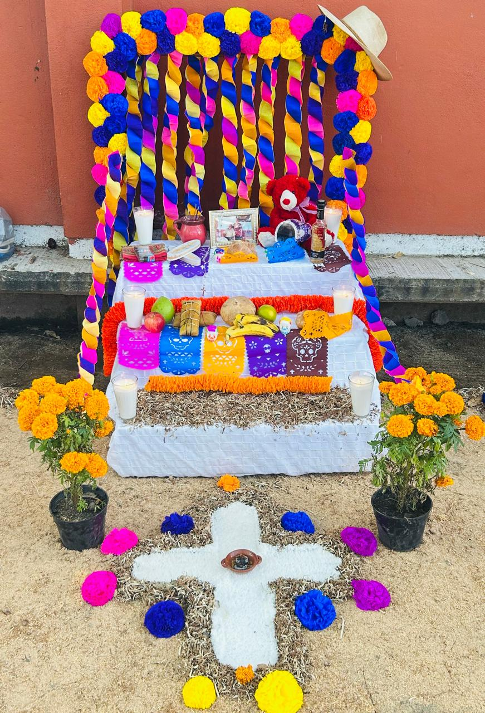
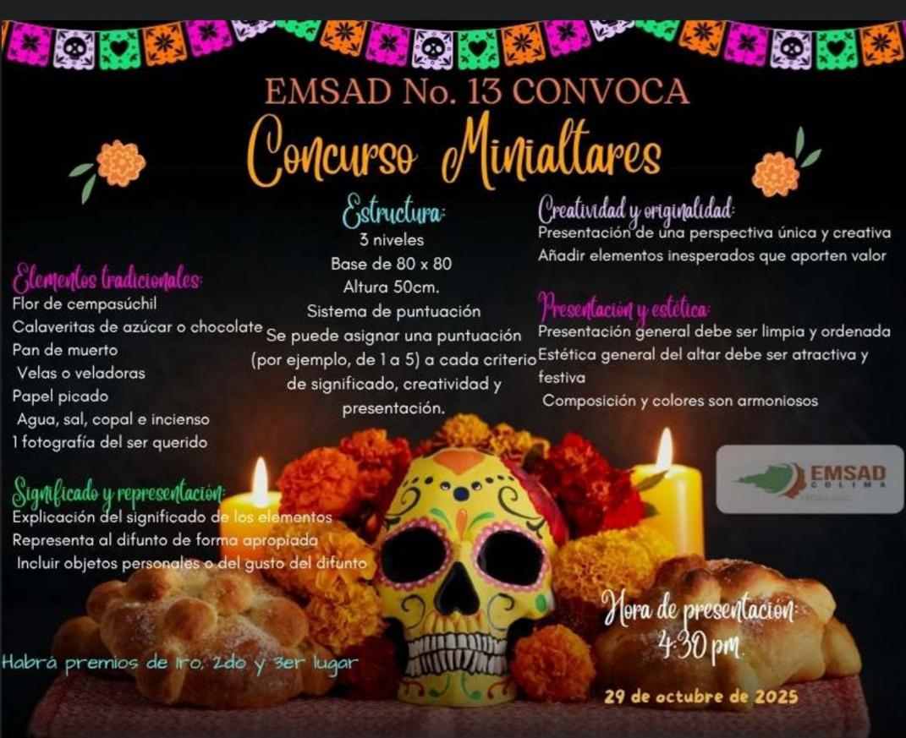
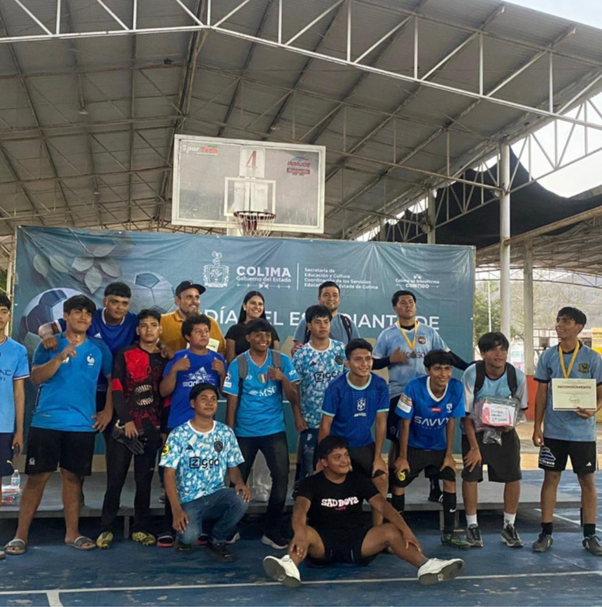
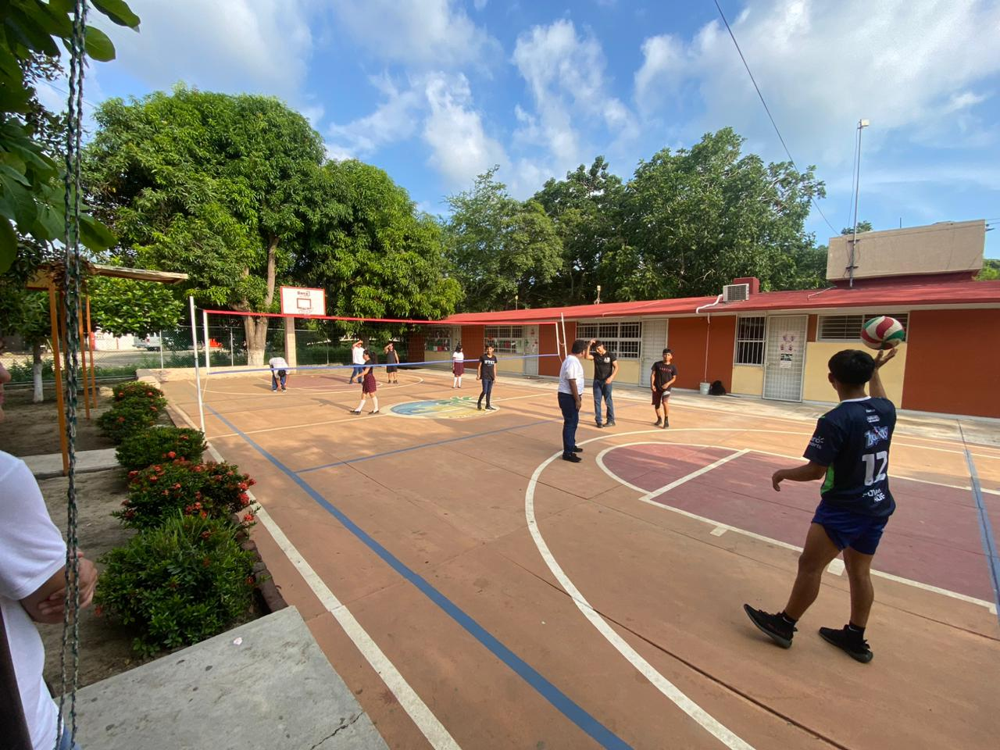

En esta sección se presentan algunas de las fechas conmemorativas que se celebran dentro de la institución. Estas actividades permiten a los estudiantes participar en tradiciones y celebraciones que fortalecen la convivencia, el respeto y el compañerismo. Entre las fechas más destacadas se encuentran el Día de Muertos, el Día del Amor y la Amistad y la celebración de Navidad, momentos especiales en los que la comunidad escolar comparte experiencias culturales y recreativas.


En esta sección se presentan algunos de los eventos académicos y deportivos en los que participan los estudiantes. Estas actividades fomentan la participación, el trabajo en equipo y la sana convivencia. Entre los deportes más destacados se encuentran el fútbol y el voleibol, donde los alumnos demuestran su talento, disciplina y espíritu deportivo al representar a la escuela en diferentes torneos.

